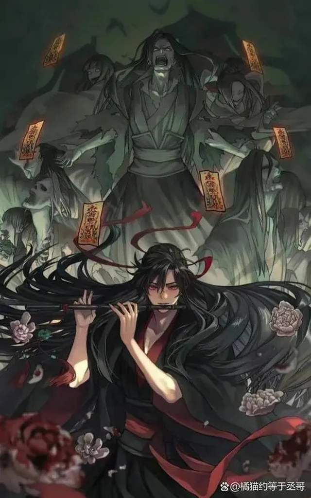

Ngụy Vô Tiện (Ngụy Anh, tự Vô Tiện), hiệu Di Lăng Lão Tổ, là một trong những nhân vật trung tâm của Ma Đạo Tổ Sư, nổi bật với dung mạo tuấn mỹ và tính cách hoạt bát, phóng khoáng. Mồ côi cha mẹ từ nhỏ, hắn được Giang Phong Miên đưa về Liên Hoa Ổ nuôi dưỡng, lớn lên cùng Giang Trừng và Giang Yếm Ly. Thuở thiếu niên, Ngụy Vô Tiện là thiên tài tu luyện, sớm thành danh và từng theo học tại Cô Tô Lam thị, nơi hắn quen biết Lam Vong Cơ. Trải qua biến cố gia tộc bị diệt, hắn hy sinh kim đan để cứu Giang Trừng, từ đó mất đi linh lực và buộc phải bước lên con đường ma đạo sau khi sống sót từ Loạn Táng Cương. Với pháp khí sáo Trần Tình và Âm Hổ Phù, hắn trở thành Di Lăng Lão Tổ lừng danh, lập nhiều chiến công nhưng cũng bị người đời e sợ và xa lánh. Cuộc đời Ngụy Vô Tiện là chuỗi bi kịch khi hắn mất đi những người thân yêu và cuối cùng chết trong sự vây diệt của tiên môn. Mười ba năm sau, hắn được hiến xá sống lại, gặp lại Lam Vong Cơ và cùng y tìm ra chân tướng năm xưa, rửa sạch oan khuất. Sau tất cả, Ngụy Vô Tiện lựa chọn rời xa thị phi, cùng Lam Vong Cơ kết thành đạo lữ, sống cuộc đời tự do, đúng với quan niệm: “Đúng sai ở mình, khen chê do người.”